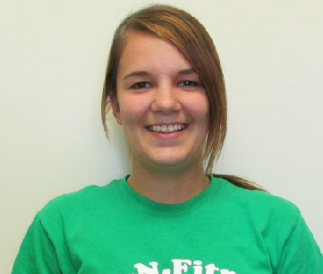
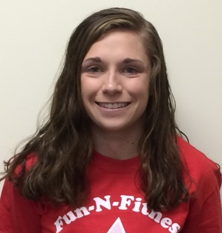
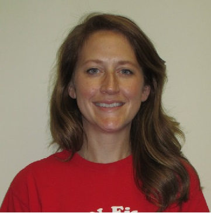
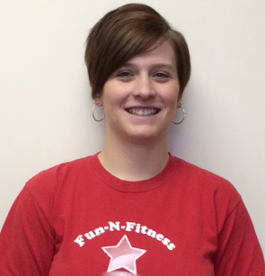

Fun-N-Fitness
Our Staff

Barb is the owner and an instructor at Fun-N-Fitness. She has been teaching gymnastics for 26 years. Barb is a USA Gymnastics member and is certified by USA Gymnastics in Safety/Risk Management. She has attained USA Gymnastics National Certifications in both the Kinder Accreditation for Teachers (KAT) and Movement Education and Lesson Plan Development (MELPD). She has received her certificate from USA Gymnastics in completing/passing the Fundamentals of Gymnastics course. Barb is certified by the Pediatric Training Programs in CPR and First Aid for adults, children, and infants & AED's for adults. Whenever possible, Barb attends clinics/seminars to keep her education with the sport of gymnastics current. She has two daughters, both of whom competed in gymnastics up to Level 9. Barb is proud to be beginning her 14th year of owning Fun-N-Fitness and is thankful for all the families who have contributed to our success. She enjoys volunteering in the community, biking, walking, skiing, travelling, and spending time with family & friends in her spare time.

Angie is a senior at Riley High School. She has been involved in gymnastics for 12 years. Angie was a competitive gymnast for 10 of those 12 years and competed up to Level 7. She has received her certificate from USA Gymnastics in completing/passing the Fundamentals of Gymnastics course. Angie is certified by the American Heart Association in First Aid, CPR, and AED's. Angie is super excited to be instructing a sport for which she has great passion! She brings much energy to our program and is beginning her 2nd year instructing at Fun-N-Fitness!
Bobbie is a senior at Penn High School and is a former student at Fun-N-Fitness. She was involved with gymnastics for 5 years. Bobbie was a cheerleader at Grissom Middle School for 2 years and has been the director of her church's day care for 3 years. Bobbie has received her certificate from USA Gymnastics in completing/passing the Fundamentals of Gymnastics course. She is certified by the Pediatric Training Programs in CPR and First Aid for adults, children, and infants and AED's for adults. Bobbie enjoys working with children and is excited to begin her 2nd year as an instructor at Fun-N-Fitness!

Cassidy is a senior at Penn High School and is one of our instructors. She is a former Fun-N-Fitness student. She was a middle school cheerleader for 2 years. Through several volunteer programs, Cassidy has much experience working with children. She is certified by the Pediatric Training Programs in CPR and First Aid for adults, children, and infants and AED's for adults. She is on the golf team at Penn and hopes to pursue her love of the game in college. Cassidy brings much energy and love of children to her teaching. She is a great addition to our teaching staff and is happy to be teaching at Fun-N-Fitness!

Joy holds a B.S. in Elementary Education from Cortland University in New York and a M.A. in Elementary Education from Ball State University. She currently teaches first grade at Walt Disney Elementary. Joy was a competitive gymnast for 15 years and still loves to tumble. Joy is certified by the Pediatric Training Programs in adult, child, and infant CPR and First Aid as well as AED's for adults. She loves teaching children inside the classroom and the gym. Joy has a 2 year old daughter & welcomed her son in July. She is one of our substitute teachers at Fun-N-Fitness!

Kasey is a graduate from IUSB with a degress in elementary education with a concentration in math. She took gymnastics for 7 years and was a cheerleader at IUSB for 2 yrs. She is certified by the Pediatric Training Programs in CPR and First Aid for adults, children, and infants & AED's for adults. Kasey has received her certificate from USA Gymnastics in completing/passing the Fundamentals of Gymnastics course. Kasey's bubbly personality is loved by everyone! Kasey taught at Fun-N-Fitness for 3 years & we are happy to have her as one of our substitute teachers!

Kelsey is a junior at Penn High School where she is a varsity cheerleader. She is one of our instructors at and is a former Fun-N-Fitness student. Kelsey is certified by the American Heart Association in CPR and First Aid for adults, children, and infants and AED's for adults. She is a USA Gymnastics member and has received her certificate from USA Gymnastics in completing/passing the Fundamentals of Gymnastics course. She loves tumbling and working with children. Kelsey is excited to share her love of gymnastics with our students!

Lesley is a lifelong resident of Mishawaka. She is a graduate of Mishawaka Marian High School & Indiana University, Bloomington. Lesley is certified by the Pediatric Training Programs in CPR and First Aid for adults, children, and infants and AED's for adults and is a USA Gymnastics member. Lesley is our office assistant and will be happy to answer any questions you have regarding all of our programs. She has 3 children, who have all attended Fun-N-Fitness. Lesley loves all the health benefits Fun-N-Fitness provides her children and is happy to be a part of providing that to other children in the community!

Marissa is a sophomore at IUSB and is majoring in elementary education. She was a cadet teacher at Elm Road Elementary School. She took gymnastics for 5 years and was a cheerleader for 2 years. Marissa is certified by the Pediatric Training Programs in CPR and First Aid for adults, children, and infants & AED's for adults. Marissa has received her certificate from USA Gymnastics in completing/passing the Fundamentals of Gymnastics course. Marissa loves working with children and is very enthusiastic to begin her 3rd year of teaching at Fun-N-Fitness!

Paige is a 2008 graduate of Penn High School. She handles our front office duties. Paige is a USA Gymnastics member and is certified by USA Gymnastics in Safety/Risk Management. She has received her certificate from USA Gymnastics in completing/passing the Fundamentals of Gymnastics course. Paige is certified by the Pediatric Training Programs in CPR and First Aid for adults, children, and infants & AED's for adults. Paige will both greet you and be happy to answer any questions you have regarding all of our programs. Paige has a 2-1/2 yr. old daughter and a 1yr. old daughter. She enjoys spending time with her girls and family in her free time. Paige appreciates all that Fun-N-Fitness has to offer children. She begins her 8th year working at Fun-N-Fitness!

Sarah is a graduate from Indiana University at South Bend with a degree in elementary and special education. She has received her certificate from USA Gymnastics in completing/passing the Fundamentals of Gymnastics course. Sarah is certified by the Pediatric Training Programs in CPR and First Aid for adults, children, and infants and AED's for adults. She loves working with children. Sarah taught at Fun-N-Fitness for 5 years & we are happy to retain her as one of our substitute teachers!

Miss Tes is 2014 graduate of Mishawaka Marian High School where she was cheerleader for 3 years. She has been an instructor at Marian's summer K-8 cheer camps. Tes is a sophomore at St. Mary's College majoring in Biology and minoring in K-12 education. She is certified by the Pediatric Training Programs in CPR and First Aid for adults, children, and infants and AED's for adults. Tes is USA Gymnastics member and has received her certificate from USA Gymnastics in completing/passing the Fundamentals of Gymnastics course. Her 2 younger sisters attend Fun-N-Fitness. Tes brings a great spirit to our teaching staff and is looking forward to giving that spirit to our students!